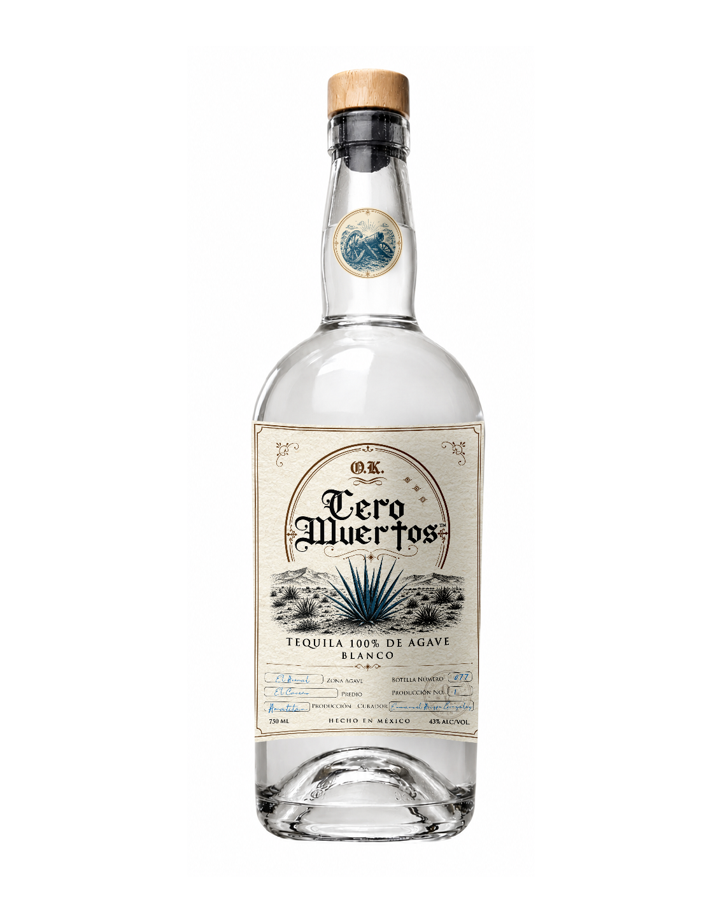
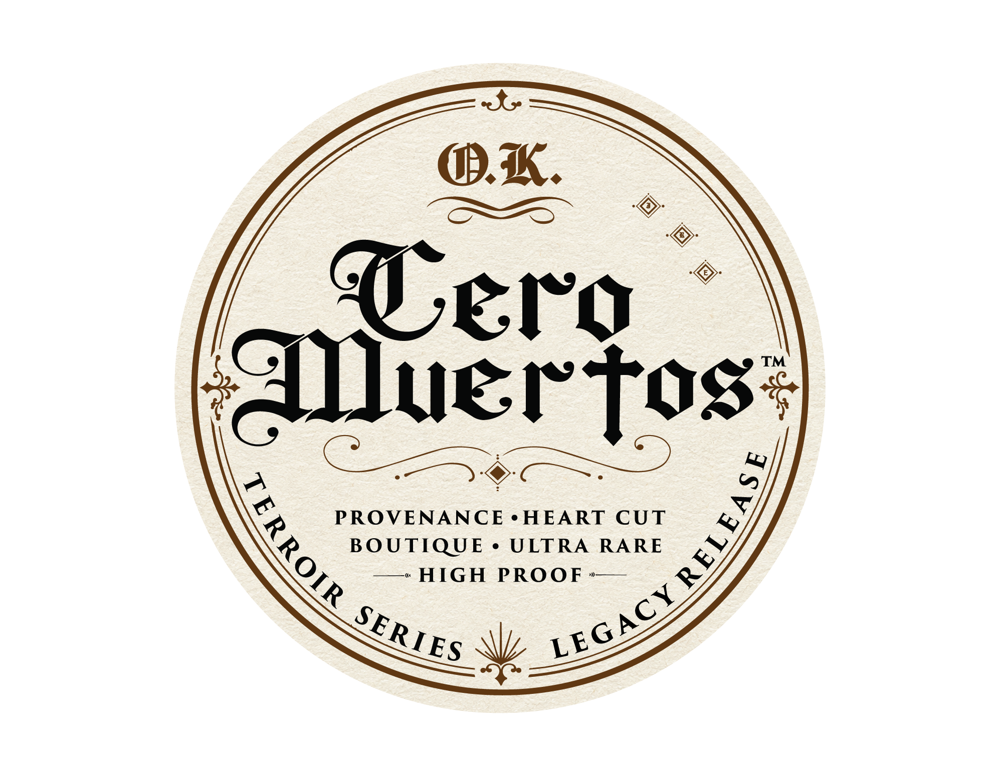
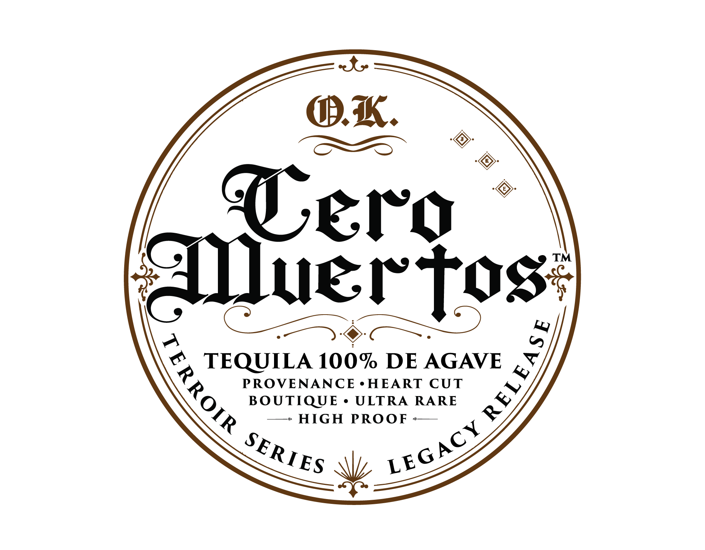
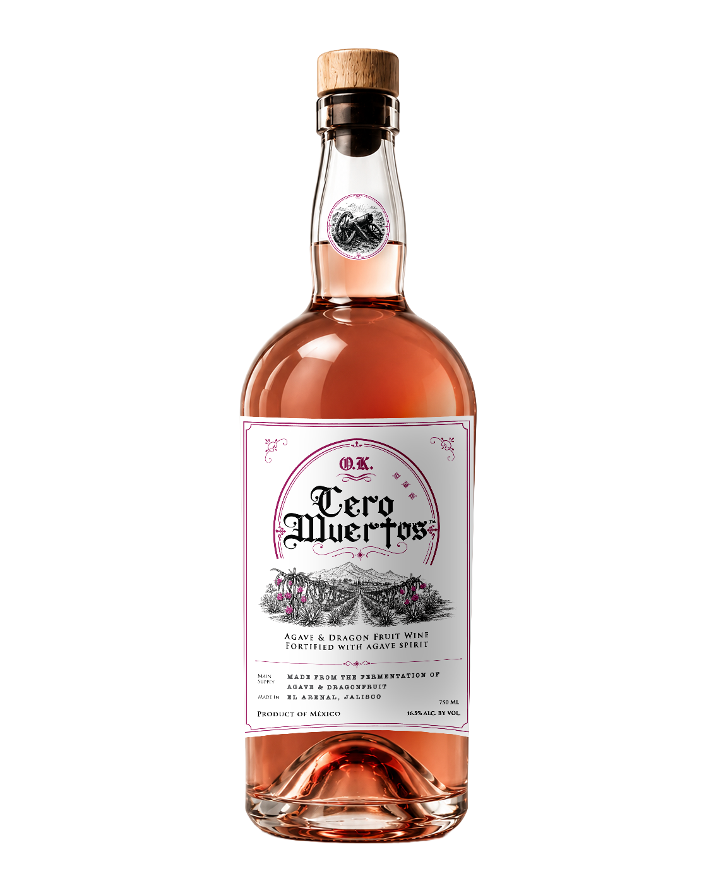
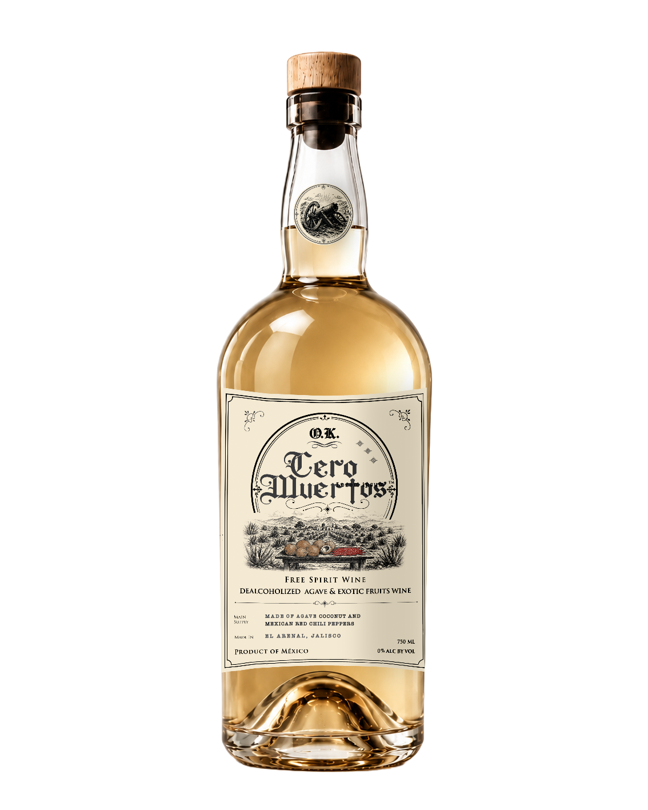

Tequila
Blanco
Tequila 100% de agave elaborado para quienes buscan una expresión limpia, directa y auténtica del agave mexicano.
- 43% Alc. Vol.
- 100% Agave
- Hecho en México

Disfruta con responsabilidad
Este sitio contiene información sobre bebidas alcohólicas y está dirigido únicamente a personas mayores de edad conforme a las leyes aplicables en su país de residencia.

Destilados y fermentados artesanales mexicanos creados para celebrar la vida, la tradición y el regreso a casa.
O.K. Cero Muertos nace de una leyenda de regreso, honor y vida.
Y cuenta la leyenda que, cuando no había bajas humanas en el campo de batalla, los soldados regresaban y escribían en la puerta: O.K., es decir:
Zero Killed.CERO MUERTOS.
De esa idea nace nuestro nombre: una celebración del regreso victorioso, de volver a casa, de reunirse con los suyos y brindar por la vida.
Desde las tierras de Jalisco, donde el agave es raíz, cultura y destino, transformamos esa historia en tequila artesanal, vinos de agave y frutos exóticos, y propuestas creadas con oficio mexicano.
Celebramos la vida con tequila y vino. Somos mexicanos comprometidos con nuestros valores:Dios, Familia y Libertad.

Tequila 100% de agave elaborado para quienes buscan una expresión limpia, directa y auténtica del agave mexicano.

Fermentado artesanal de agave y frutos exóticos mexicanos. Una propuesta distinta, fresca y con identidad propia.

Una expresión sin alcohol pensada para quienes también quieren formar parte del brindis.
Desde el corazón de México nace nuestro oficio: seleccionar agave, cuidar el proceso y crear expresiones artesanales con identidad propia.
Trabajamos con respeto por la tierra, paciencia por el tiempo y orgullo por lo hecho en México.
Toda leyenda necesita un guardián. El Guardián del Regreso representa el camino de vuelta: la memoria, la protección, la tradición y la luz que guía hacia casa.
No es un personaje decorativo. Es el símbolo de una promesa:
Regresar con vida. Regresar con historia. Regresar con honor.
El regreso apenas comienza. Acompáñanos en el camino de O.K. Cero Muertos: nuevos productos, historias, procesos artesanales, lanzamientos y momentos de celebración.